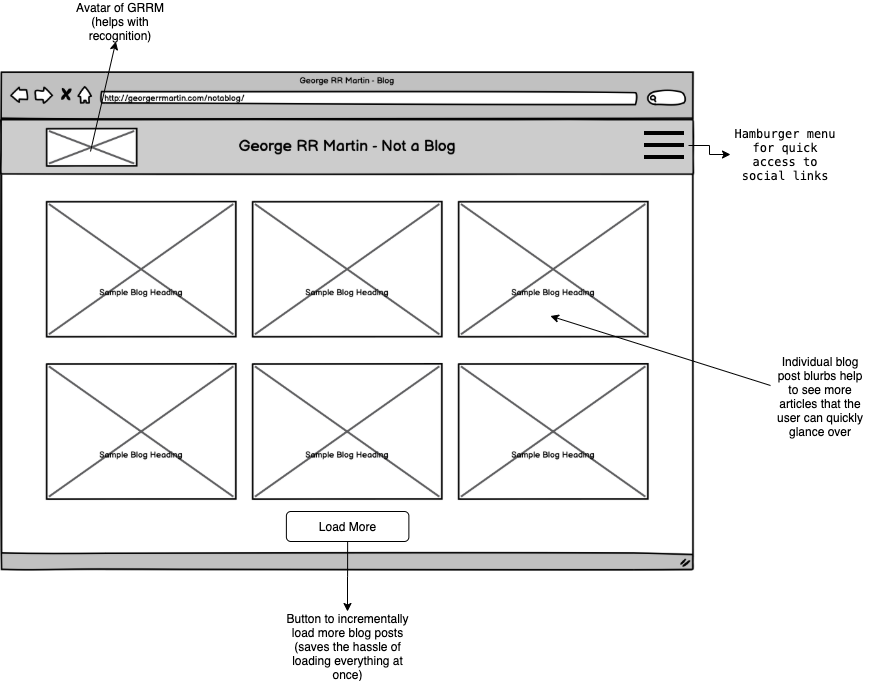
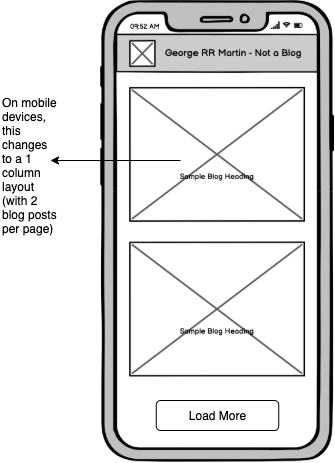

Low-fidelity Wireframing
I used Balsamiq to create 3 wireframes, and annotated them. I also address as to how these wireframes may help solve the issues I discussed in Part 1 above!



In this project I aimed to achieve the following goals:
I ended up choosing George RR Martin's Blog website which can be found here
Below you can find the sketches and the mockup that I came up with.
I ended up using BootStrap as a markup framework to allow for that mobile responsiveness, and in the end I think it all came together well.
I divided this project into the following parts:
I identified a couple of usability issues with the blog portion which I outline below:
While not too many, the website could use some improvements with regards to accessibility. They are as follows:
I used Balsamiq to create 3 wireframes, and annotated them. I also address as to how these wireframes may help solve the issues I discussed in Part 1 above!
Based on the wireframes created above, I also created 3 prototypes using Figma. Also, I annotated all the prototypes to indicate how elements should respond / be styled.
Based on the above wireframes and prototypes, I recreated the new Blog
site using HTML and CSS. Here is a link to the website:
New Website - Not a Blog
Here are some observations I had while checking for responsiveness and so forth: